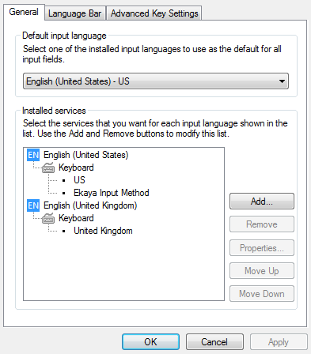
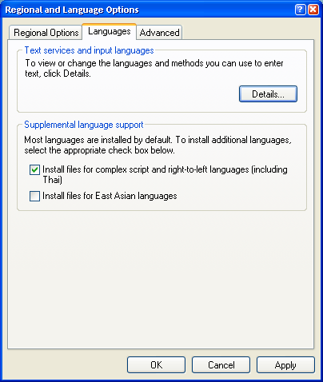
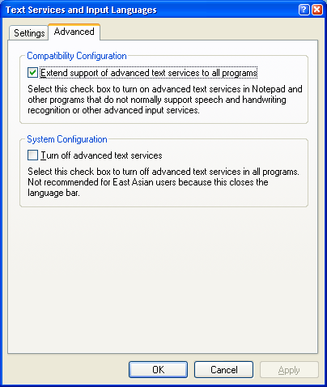
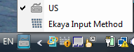
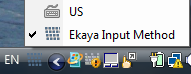

အက္ခရာထည့်သွင်းခြင်းနည်းလမ်း
အက္ခရာထည့်သွင်းခြင်းနည်းလမ်းသည် လွတ်လပ်စွာဝင်ရောက်ပြင်ဆင်နိုင်သော ရင်းမြစ်လိုင်ဘရီကိုသုံးခြင်းဖြင့် Tavultsoft Keyman အတွက် ကီးဘုတ် အဆင်အပြင်ကို လက်ရှိထောက်ပံ့သည်။ ဆိုလိုသည်မှာ အချက်အလက်များမှန်ကန်အစီစဉ်ကျစွာ ထားသိုနိုင်ရန်အတွက် ရိုက်နှိပ်သောကြောင့် ကီးဘုတ်သည် စာသားအခြေအနေဆက်စပ်မှုကို တိကျစွာပြန်လည်စီစဉ်ပေးခြင်းကို လုပ်နိုင်သည်။ အရှေ့တောင်အာရှရှိ ရှုပ်ထွေးသော စာရေးသားခြင်းအတွက် ၎င်းကို မကြာခဏလိုအပ်မည်။
ဖွဲစည်းထားပုံ
အက္ခရာသည် Windows Advanced Text Services ကို အသုံးပြုသည်။ ၎င်းကို Keyboards and Languages တက်ဘ် ရှိ Control Panel / Regional and Language Options တွင် အခြားအရာများနှင့်တွဲသုံးနိုင်ရန် စီစဉ်ထားသည်။ ဒိုင်ယာလော့ဘောက်ဖွင့်ရန်Change Keyboardsကိုနှိပ်ပါ။ (XP ပေါ်တွင်Details ကိုနှိပ်ပါ။) English-US ဒေသအတွက် သုံးရန် အက္ခရာကို ဖွဲ့စည်းထားသည်။ ဒါကြောင့် ထည့်သွင်းခြင်းပြီးနောက်Ekaya Input Method ကို General တက်ဘ်ပေါ်ရှိ English-US အောက်တွင်တွေ့မည်။ Advanced Key Settings တက်ဘ်ပေါ်တွင် အက္ခရာအတွက် အတိုကောက် သော့ချက်ကို ပြုလုပ်နိုင်သည်။

XP ပေါ်တွင်ဖွဲ့စည်းပုံ
Windows XP ပေါ်တွင် မြန်မာယူနီကုတ် ၅.၁ ဖောင့်အတွက် မှန်ကန်စွာဖော်ပြနိုင်ရန် Install files for complex script and right to left languagesအမှတ်ခြစ်ပါ။

အဆိုပါစာမျက်နှာပေါ်တွင် နောက်ထပ်ဖွဲ့စည်းပုံ ရွေးနိုင်မှုအတွက် Details ကိုနှိပ်ပါ။အက္ခရာထည့်သွင်းမှုကို ပြုလုပ်သော်လည်း ပရိုဂရမ်အားလုံးတွင် Advanced Text Services ကိုလည်း သုံးနိုင်ရန် လိုအပ်လိမ့်မည်။ အကျိုးသက်ရောက်ရရန်အတွက် ကွန်ပျူတာ ပိတ်ပြီပြန်ဖွင့်ရန် လိုအပ်သည်။

အက္ခရာ အသုံးပြုခြင်း
အက္ခရာကို ထည့်သွင်းသောအခါ Task Bar (သို့) Language Bar တစ်ခုခုပေါ်ရှိ ကီးဘုတ်အိုင်ကွန်မှ အက္ခရာကို ပြောင်းသုံးနိုင်သည်။
ကီးဘုတ်အိုင်ကွန်ကို နှိပ်ပါ။ ပြီးနောက် မီနူးမှ Ekaya Input Method ကို ရွေးချယ်ပါ။

ထည့်သွင်းပြီးသော KMFL ကီးဘုတ်မြောက်မြားစွာရှိနိုင်သည်။ ထို့ကြောင့် အက္ခရာအိုင်ကွန်နှင့်ကပ်လျက်ရှိသော အက္ခရာမီနူးပေါ်မှာ ကီးဘုတ်များကို ပြောင်းနိုင်သည်။ .
အက္ခရာမီနူးကို မမြင်ရင် Language Bar ကို သွားပါ။ Additional icons in taskbar ကို အမှတ်ခြစ်ပါ။

Ctrl+Space အက္ခရာနှင့် ရိုးရိုးကီးဘုတ်ပြောင်းသည်။
Ctrl+Shift+Space နောက်ထပ်အက္ခရာကီးဘုတ် ပြောင်းသည်။
ကီးဘုတ် ထည့်သွင်းခြင်း
ကီးဘုတ်ကို Keyman/KMFL စီစဉ်ဖွဲ့စည်းမှုတွင် .kmnနောက်ဆက်တွဲဖိုင်နှင့်အတူ ရေးရန်လိုအပ်သည်။ kmn ဖိုင်ကို C:\Program Files\ThanLwinSoft.org\Ekaya\kmflသို့ အစက်များပုံ ရည်ညွှန်းချက်တစ်ခုခုနှင့်အတူ ကူးပါ။ HTML စီစဉ်ဖွဲ့စည်းမှုတွင် မှတ်တမ်းမှတ်ရာပြုလုပ်ခြင်းရှိရင် kmn ဖိုင်အဖြစ် တူညီသောဖိုင်အမည်နှင့်အတူ သို့မဟုတ် .html နောက်ဆက်တွဲဖိုင်အဖြစ် တူသောဒရိုက်ထရီသို့ ၎င်းကို ကူးယူပါ။ ကွန်ပျူတာ အုပ်ချုပ်သူ၏ ဝင်ရောက်ကြည့်နိုင်ရန် ခွင့်မရှိလျှင် သင့်ကွန်ပျူတာ ဒရိုက်ထရီတွင် AppData\Roaming\ThanLwinSoft.org\Ekaya\kmfl အောက်မှာ ကီးဘုတ်ကို ထည့်သွင်းနိုင်သည်။ (Window XP ပေါ်တွင် Application Data\ThanLwinSoft.org\Ekaya\kmfl) ၎င်းမရှိလျှင် ဒရိုက်ထရီ တစ်ခု ဖန်တီးပါ။